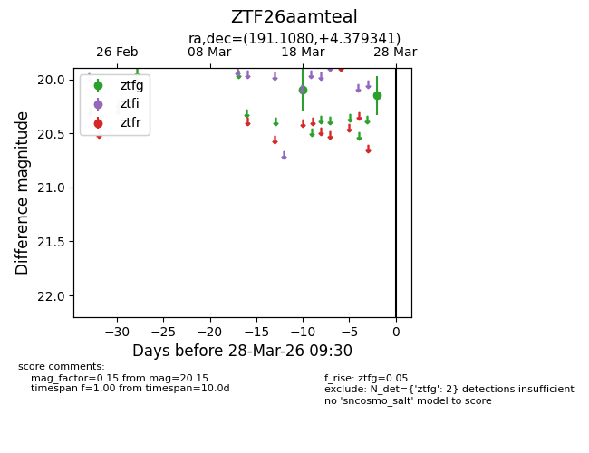
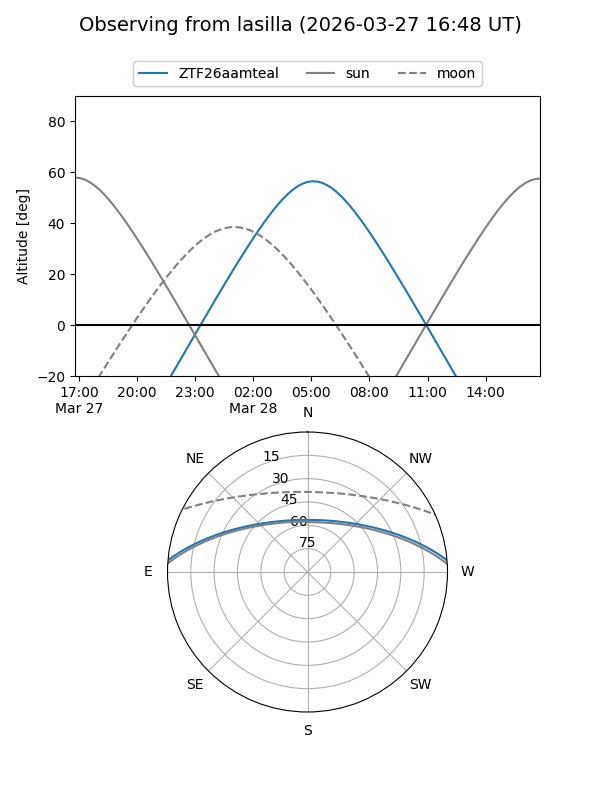
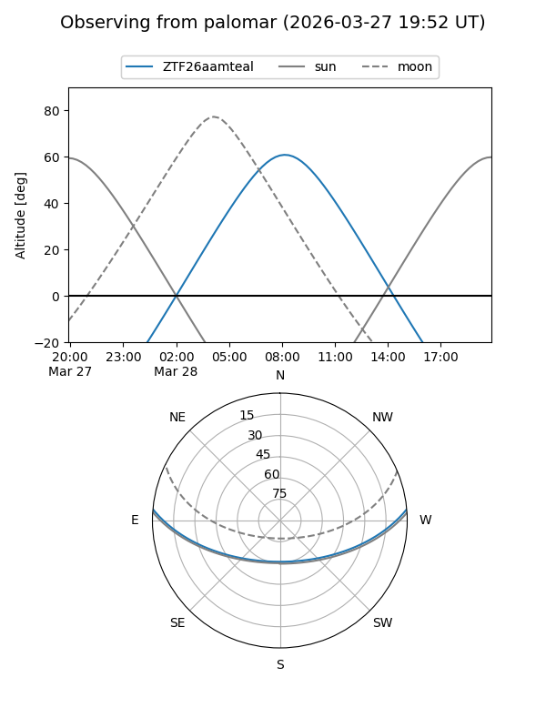

ZTF26aamteal
Target ZTF26aamteal at 2026-03-28 09:33
Aliases and brokers:
FINK: link
Lasair: link
ALeRCE: link
alt names
ZTF26aamteal (ztf,fink_ztf)
Coordinates:
equatorial (ra, dec) = 191.1080,+4.37934
equatorial (HMS+DMS) = 12:44:25.93,+04:22:45.63
galactic (l, b) = (298.4234,+67.18974)
Flags:
Photometry:
last ztfg=20.15
2 ztfg detections
Lightcurve

Visibility


Additional plots